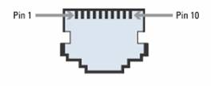
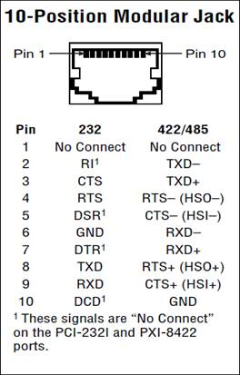
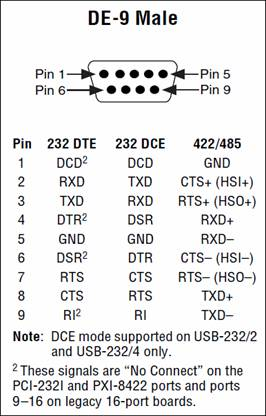
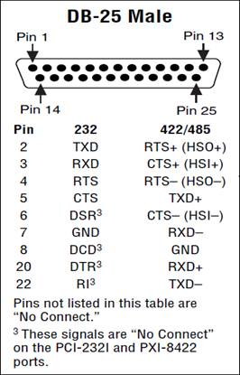
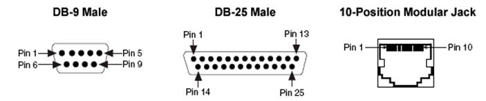
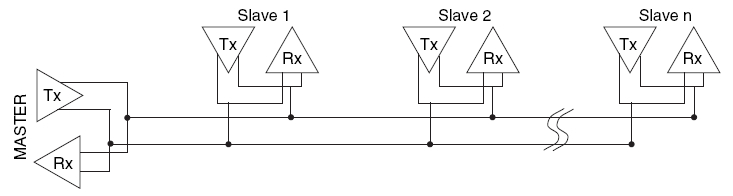
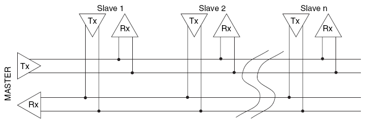

| Simpole® |
|
|---|
PCI8433 I/O板卡是NI公司生产的串行通信板卡之一，本节依据NI公司相关资料，结合在Simpole中的应用，介绍板卡硬件相关内容，包括板卡的组件、I/O口映射关系及板卡电气特性等。
具体内容如下：
PCI8433板卡是一个支持RS422和RS485的串行通信板卡。
PCI8433板卡与外部设备通过连接器RJ50（10-position jack）实现连接，连接器RJ50（10-position jack）外形图如下图所示。
连接器RJ50（10-position jack）的引脚定义如下表所示。

NI公司匹配的通信电缆（非隔离）可以把连接器RJ50（10-position jack）转换成标准连接器DB-9或者DB-25。DB-9和DB-25连接器的引脚定义图分别如下图所示。
 
DB-9、DB-25和10-position jack连接器引脚对应关系如下表所示。
| DB-9 Male | DB-25 Male | 10-Position Modular Jack | ||||||
|---|---|---|---|---|---|---|---|---|
| Pin | EIA-232 | EIA-485/422 | Pin | EIA-232 | EIA-485/422 | Pin | EIA-232 | EIA-485/422 |
| 1 | DCD | GND | 2 | TXD | RTS+(HSO+) | 1 | No Connect | No Connect |
| 2 | RXD | CTS+(HSI+) | 3 | RXD | CTS+(HSI+) | 2 | RI | TXD- |
| 3 | TXD | RTS+(HSO+) | 4 | RTS | RTS-(HSO-) | 3 | CTS | TXD+ |
| 4 | DTR | RXD+ | 5 | CTS | TXD+ | 4 | RTS | RTS-(HSO-) |
| 5 | GND | RXD- | 6 | DSR | CTS-(HSI-) | 5 | DSR | CTS-(HSI-) |
| 6 | DSR | CTS-(HSI-) | 7 | GND | RXD- | 6 | GND | RXD- |
| 7 | RTS | RTS-(HSO-) | 8 | DCD | GND | 7 | DTR | RXD+ |
| 8 | CTS | TXD+ | 20 | DTR | RXD+ | 8 | TXD | RTS+(HSO+) |
| 9 | RI | TXD- | 22 | RI | TXD- | 9 | RXD | CTS+(HSI+) |
| - | - | - | - | - | - | 10 | DCD | GND |
PCI8433支持两线式半双工通信和四线式全双工通信，连接方式分别如下图所示。
两线半双工通信的连接方式如下图所示。
四线全双工通信的连接方式如下图所示。

RS422采用四线式全双工通信，最大传输距离为4000英尺（约1219米），最大传输速率为10Mb/s。其平衡双绞线的长度与传输速率成反比，在 100kb/s速率以下，才可能达到最大传输距离。只有在很短的距离下才能获得最高速率传输。一般100米长的双绞线上所能获得的最大传输速率仅为 1Mb/s。 RS-422需要一终接电阻，要求其阻值约等于传输电缆的特性阻抗。在短距离传输时可不需终接电阻，即一般在300米以下不需终接电阻。终接电阻接在传输电缆的最远端。RS-422是差模传输，抗干扰能力强，能传1200米。
RS485采用两线式半双工通信，RS-485采用平衡发送和差分接收，因此具有抑制共模干扰的能力。加上总线收发器具有高灵敏度，能检测低至200mV的电压，故传输信号能在千米以外得到恢复。RS-485采用半双工工作方式，任何时候只能有一点处于发送状态，因此，发送电路须由使能信号加以控制。RS-485用于多点互连时非常方便，可以省掉许多信号线。应用RS-485可以联网构成分布式系统，其允许最多并联32台驱动器和32台接收器。在要求通信距离为几十米到上千米时，广泛采用RS-485 串行总线。RS-485最大的通信距离约为1219m，最大传输速率为10Mb/S，传输速率与传输距离成反比，在100Kb/S的传输速率下，才可以达到最大的通信距离，如果需传输更长的距离，需要加485中继器。RS-485总线一般最大支持32个节点，如果使用特制的485芯片，可以达到128个或者256个节点，最大的可以支持到400个节点。
RS-422通过两对双绞线可以全双工工作收发互不影响，而RS485只能半双工工作，发收不能同时进行，但它只需要一对双绞线。
以上简要给出一些PCI8433 板卡信息，详细内容参见NI网站。
|
RS422/RS485 SimpoleD Reference |
|
|---|